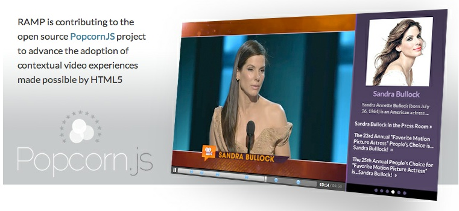

Bobby Richter and Ben Moskowitz lead Popcorn software development at the Mozilla Foundation.
Popcorn is an HTML5 media project from Mozilla, the non-profit organization that makes the Firefox web browser. It makes media-oriented web development easy through shared development, open source libraries and tools.
Popcorn.js makes web media more connected by providing an event-driven API to hook <video> and <audio> content into the of the capibilities of the web platform (developer.mozilla.org).
Prior to HTML5, web video lived exclusively inside browser plug-ins like Flash and VLC, which put it outside the reach of JavaScript, CSS, and other techniques for interacting with the rest of the surrounding HTML document.
Popcorn.js turns media into fully-interactive JavaScript objects, so that media objects can both trigger and listen for events. It enables developers to cue events along a media timeline using a simple Javascript syntax:
var pop = Popcorn("#my-video");
pop.text({
start: 1.38,
end: 5.12,
text: "Hello World",
target: "my-div"
});
pop.play();
Live source available at http://jsfiddle.net/p8Kbs/80/.
Additionally, media playback is accessible via popcorn.play(), popcorn.pause(), and popcorn.currentTime(seconds), which allows you to jump to any point in the timeline of the referenced media. As a nod toward the expectations of media producers and videographers, Popcorn.js also provides methods like popcorn.cue(), which simply ties actions to specific times.
Aside from simple time-based triggers, you can use popcorn.listen(event,callback_function) to bind the callback function to a specified event. Built-in events are provided to handle typical HTML5 web video playback scenarios, such as "play," "pause," "loadstart," "seeked," "volumechange," and so on. However, you can define custom events and trigger them directly by using popcorn.trigger(event[,data]), where the data parameter is an optional data object to send to listeners.
By design, Popcorn is extensible. Mozilla supports about 20 plugins that come packaged with the library, ranging from simple HTML element insertion, to complex data retrieval and aggregation. Examples include a subtitle plugin, a GoogleMaps plugin, a Twitter plugin, a Facebook plugin, and a JavaScript code plugin.
If some desired functionality doesn't yet exist in the library, Popcorn.js has a well-documented plugin architecture: http://popcornjs.org/popcorn-docs/addon-development/.
Popcorn works best with HTML5 media, but also has wrappers for arbitary objects (through the "baseplayer") and Flash players, like YouTube, Vimeo, Flowplayer, and Soundcloud. It's easy to write a wrapper for any web-oriented video player.
Popcorn also includes a set of parsers for reading common data files (SRT, TTML, XML, etc). Of course, as with other parts of Popcorn, it is easy to create a custom data parser.
Tested thoroughly, Popcorn.js supports all modern browsers and IE8. Currently, it's stable at version 1.2. You can download the Popcorn source or use a web-based build tool to wrap a custom, compressed version.
Popcorn is in use by a range of publishers, service providers, creative coders and individuals to mash video with the rest of the web.
RAMP, a content optimization company, uses an automated process to display time-coded metadata about significant people, places and things whenever they are mentioned in a video. Using Popcorn, RAMP can support a range of player types and contexts (web, mobile, headless) by developing against the common Popcorn API (http://www.ramp.com/solutions/optimized-video/metaplayer/popcorn/).
The Dutch multimedia archive Beeld en Geluid has used Popcorn to create a "living archive," connecting cultural archival material with a range of semantic metadata (http://www.openimages.eu/blog/2012/01/13/open-images-videos-enriched-with-open-data/).
Popcorn has also been used to create hyperlinked transcripts that use text as an interface for traversing and editing long media assets (http://yoyodyne.cc/h/)
Aside from scale applications, Popcorn is also supported by a burgeoning creative community (In fact, the project was started and is run by Brett Gaylor--a filmmaker!). For instance, documentary producer Kat Cizek uses Popcorn to create web based interactive films. In "1 Millionth Tower," the web browser creates a navigable 3D space that simulates high rises in major cities around the world. Popcorn is used to turn the camera at key moments, spawn visual effects, and to download live weather data from web APIs. If it's raining in Toronto, it's also raining in virtual Toronto (http://highrise.nfb.ca/onemillionthtower/1mt_webgl.php).
A key goal of the Popcorn project is to enable more connected web video on a mass scale, and to open creative possibilities to individual media-makers. Popcorn Maker is a user-facing web application used to create interactive media. It requires no code knowledge. Users pick a video from YouTube or the wider web, open the media object in a prepared HTML template, customize the project, and publish.
Popcorn Maker can be used to create pop-up videos, multimedia reports, guided web tours and more. Project composition happens live in the browser. Users can drag and drop events onto a timeline interface, position objects on the page, and watch a live preview of the project be constructed. Popcorn Maker projects are entirely human-readable HTML, CSS and Javascript.
For the time being, Popcorn Maker does not support media editing and sequencing. Users must come prepared with an edited video file. For this reason, Popcorn Maker is not a web-based video editor--rather, it's a video-based web editor. We may revisit this decision later when web browsers handle media playback and synchronization more precisely.
Like the rest of the Popcorn project, Popcorn Maker is 100% free and open source. Developers of time-based multimedia apps are encouraged to build on the Butter SDK (source code available at http://github.com/mozilla/butter) and contribute back to the project. At the time of this writing, Popcorn Maker is in active development at version 0.5, and is scheduled for a 1.0 release in late 2012. http://mozillapopcorn.org.